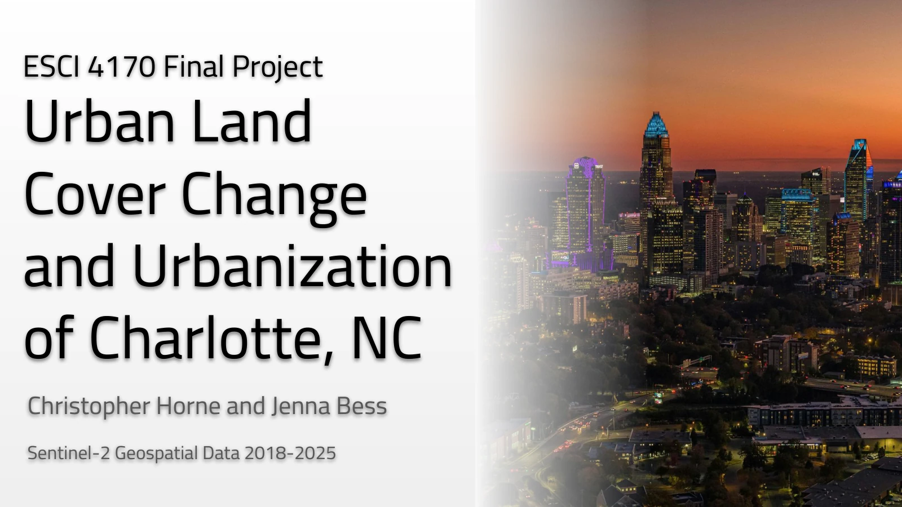

REMOTE SENSING / URBAN CHANGE
Charlotte’s changing land cover.
A collaborative Sentinel-2 study of vegetation, moisture, and urban land-cover change in Charlotte between 2018 and 2025.
THE QUESTION
What we explored.
How do spectral indicators and classified land cover describe changes in vegetation and development across Charlotte?
Completed with Jenna Bess, this project uses Sentinel-2 surface-reflectance imagery to investigate Charlotte’s changing landscape. The primary comparison uses July 2018 and July 2025 imagery, with additional years included in the NDVI time-series work.
Explore the presentation.
56 slidesLoading slide previews…

Collaborative project with Jenna Bess. The web PDF keeps selectable slide text and original figures, with images recompressed for a smaller download. The supplied original remains unchanged.
WORKFLOW
From data
to interpretation.
- Retrieve and prepare imagery. Use a Google Earth Engine workflow for Sentinel-2 data retrieval and cloud masking, with consistent July comparisons and the Charlotte city boundary.
- Examine spectral patterns. Create RGB and false-color composites, principal-component analysis, and NDVI, NDMI, and NDBI layers using the project’s ENVI workflow.
- Classify land cover. Build training regions for a five-class maximum-likelihood classification and compare the 2018 and 2025 outputs.
- Evaluate change and limitations. Use thematic change detection and an NLCD comparison. Prepare the presentation maps with the documented ENVI and Photoshop workflow.
PROJECT FINDINGS
What the work
shows.
The presentation identifies vegetation changes and expanding impervious surfaces in selected development areas, including areas near the airport and suburban growth corridors. It also discusses how drought and moisture differences can affect the spectral interpretation.
CONTEXT & LIMITATIONS
Reading the
results carefully.
- Cloud cover limited the usable comparisons. Consistent July imagery reduced seasonal differences but did not eliminate differences in moisture or weather conditions.
- The classification confused some tree and grass pixels and overestimated impervious cover relative to the NLCD comparison.
- GLCM texture analysis was attempted but excluded from the final interpretation because of data errors.
- This collaborative coursework presents exploratory results rather than a validated estimate of citywide land-cover accuracy.
LET’S TALK ABOUT THE WORK